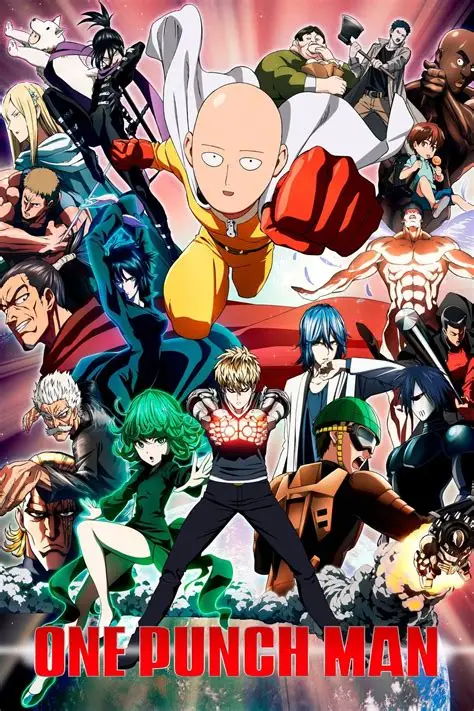
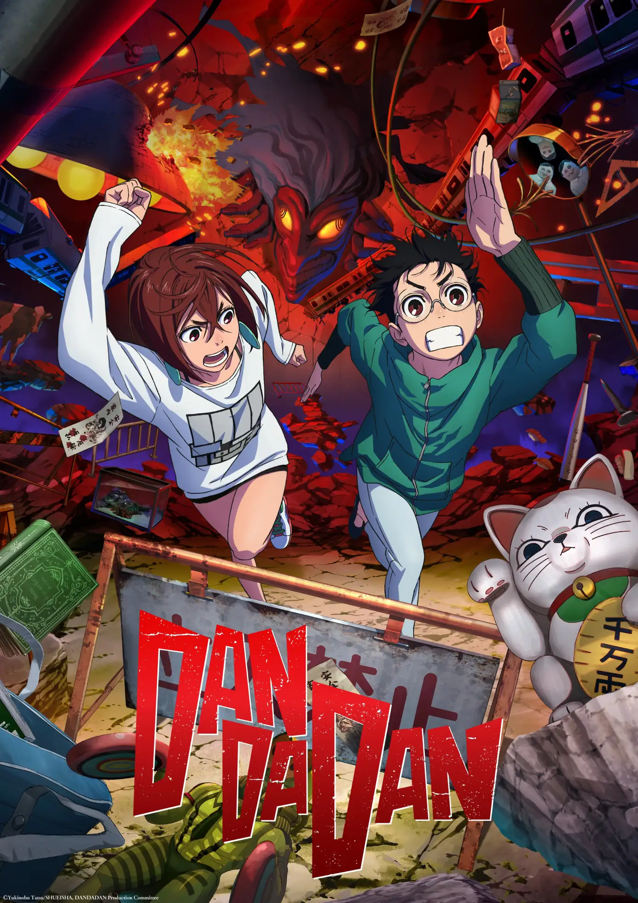
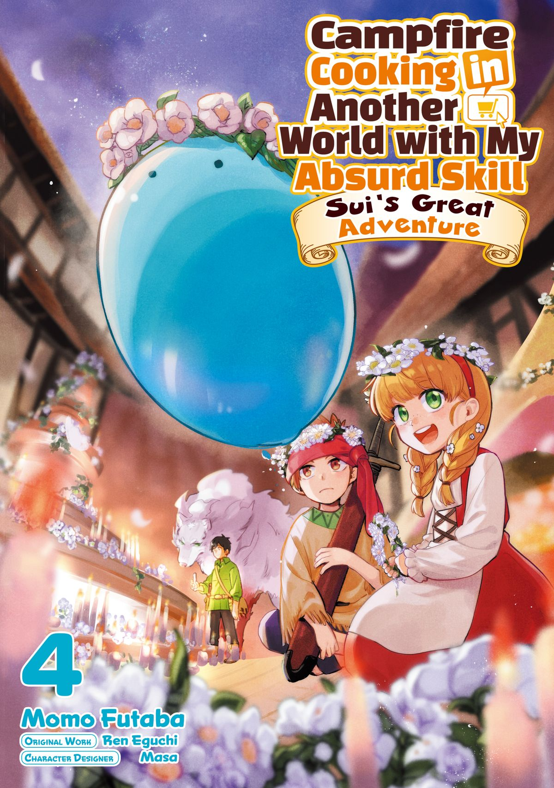
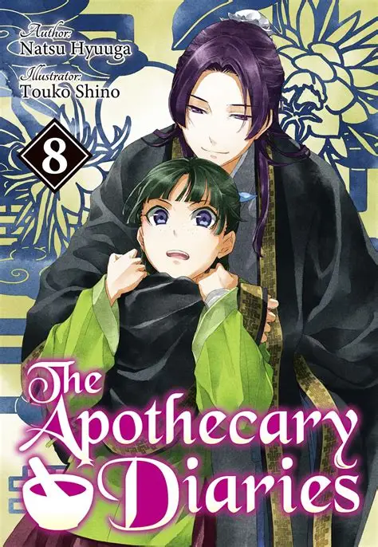
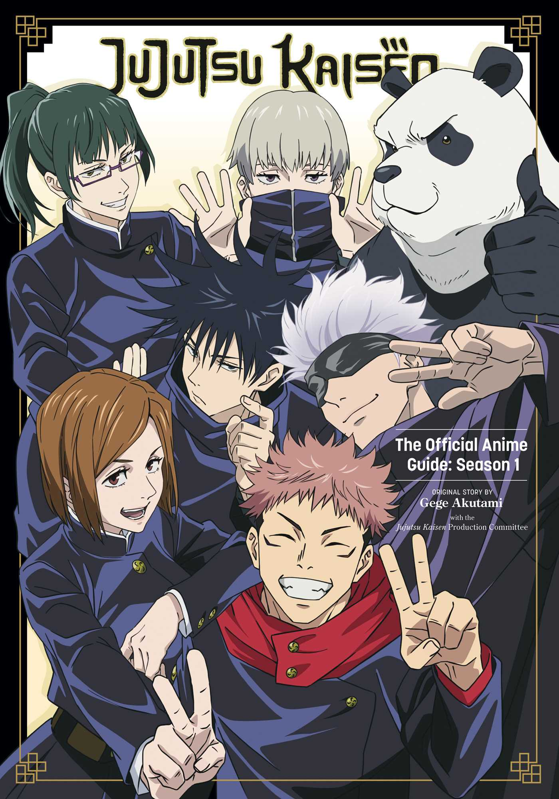
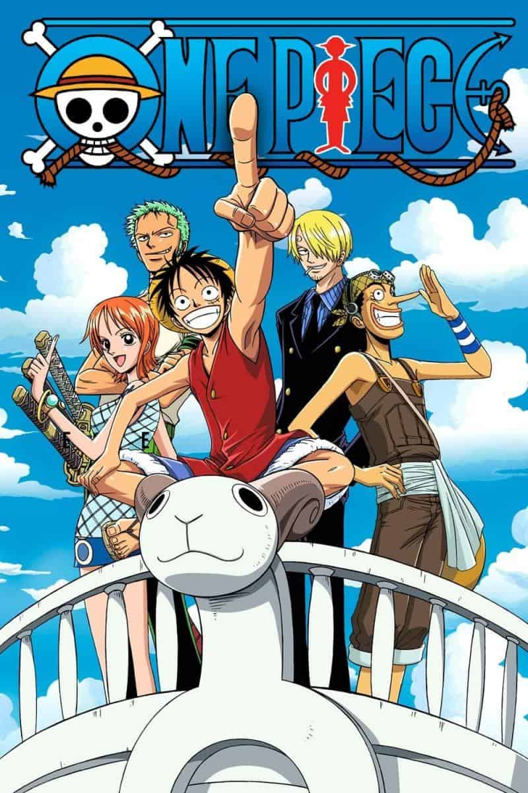
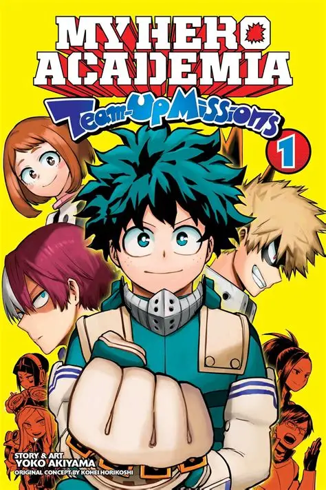
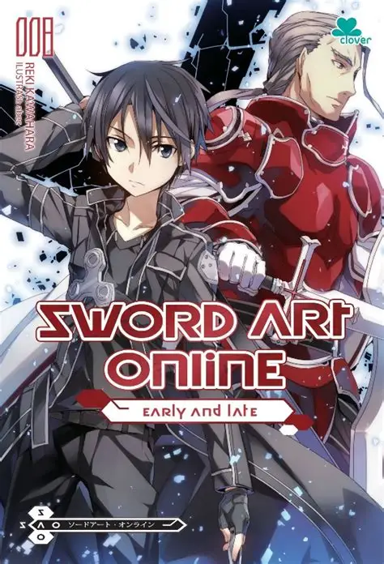

Personal Portfolio Website
This very site! A fully responsive one-page portfolio built with HTML, CSS, and vanilla JavaScript, featuring smooth scroll animations, a motivational quotes gallery, and an anime collection.
✅ Completed
Hello, my name is
Building projects, learning every day, and exploring web development and design.
Hi! I'm Joshua Omang, a 3rd-year BS in Information Technology student at the College of Maasin with a genuine passion for technology, problem-solving, and building things that make a difference. I enjoy turning ideas into working projects — whether that's a responsive website, a small program, or a class assignment I decide to take a little further than required.
Outside of academics, I love exploring new tools, following tech tutorials, and finding practical ways to apply what I learn in class. I'm always looking for opportunities to grow — through school projects, personal experiments, hackathons, or internships. I believe that technology is at its best when it solves real problems for real people, and that's exactly the kind of work I want to be part of.
As I move through my third year, I'm focusing on deepening my skills in web development, database management, and networking — while staying curious about new trends like cloud computing, cybersecurity, and AI. I'm a firm believer in continuous learning, and I'm excited to keep building my skills one project at a time.
BS in Information Technology, 3rd Year
College of Maasin
Third Year · BSIT 3-A
I learn best by asking questions, breaking things, and rebuilding them better than before.
I enjoy collaborating on group projects and believe the best ideas come from shared effort.
I set small, measurable goals every semester and hold myself accountable to reach them.
When a solution isn't obvious, I enjoy experimenting until I find one that works.
100 quotes to keep you going — one for every mood and moment.
Loading quote…
1 / 100
A few things I have built in class and during my own time.
This very site! A fully responsive one-page portfolio built with HTML, CSS, and vanilla JavaScript, featuring smooth scroll animations, a motivational quotes gallery, and an anime collection.
✅ Completed
A small program that helps students compute their GPA and visualize subject performance across a semester, made as a class project.
✅ Completed
A product landing page mockup with pricing cards, testimonials, and a responsive navigation bar, used to practice modern layout techniques.
✅ Completed
Designed a relational database schema for a small library system, including tables for books, members, and loans, with sample queries.
🔄 In Progress
A rule-based chatbot in Python that answers basic questions about the College of Maasin, built while experimenting with string matching logic.
✅ Completed
A Figma concept for an anime discovery app, focusing on card layouts and color palettes that match the energy of the shows I enjoy.
🔄 In Progress
Ways I can contribute to your project, team, or organization.
Clean, responsive landing pages and portfolios built with HTML, CSS, and JavaScript — from simple one-pagers to multi-page sites.
Wireframes, color palettes, and interface concepts using Figma and Canva, focused on usability and visual consistency.
Entity-relationship diagrams, schema design, and basic MySQL queries for small systems and school projects.
Small automation scripts, data-processing helpers, and learning-oriented programs written in Python.
Presentations, reports, and spreadsheets organized and polished with Microsoft Office tools.
One-on-one help for classmates and friends with coding basics, web concepts, and computer literacy.
Milestones, activities, and roles that have shaped my path so far.
Studying at the College of Maasin with focus areas in web development, databases, and networking.
Represented my college in a coding contest, solving algorithm and logic problems under time pressure.
Active participant in the College of Maasin IT Society, attending seminars and helping with event operations.
Completed an online certification covering HTML, CSS, responsive design, and basic JavaScript.
Graduated with honors and developed an early interest in computers, graphic design, and media.
Online courses and certifications I have completed so far.
Covered HTML, CSS, responsive design, and basic JavaScript through a structured online program.
2024Learned Python basics including variables, loops, functions, and simple file handling.
2024Studied relational database concepts, schema design, and core MySQL query writing.
2025Completed a general technology literacy course covering office tools, online safety, and productivity.
2025If you are new to anime, these are the shows I recommend starting with.
A long but rewarding journey full of adventure, friendship, and unforgettable moments. Perfect for anyone who loves big world-building.
Funny, heartwarming, and easy to get into. Great mix of action and slice-of-life comedy that works for any mood.
Stunning action and a gripping story. A modern shounen that keeps you on the edge of your seat in every arc.
Shows I've been watching on Muse Asia.
A spy, an assassin, and a telepath form a fake family — each hiding secrets from the others.
View Me
A hero who can defeat any enemy with a single punch struggles with the boredom of overwhelming power.
View Me
Two high schoolers encounter a supernatural egg and a yokai, launching them into an absurd paranormal adventure.
View Me
A young man is transported to a fantasy world where he discovers the power to rewind time upon death.
View Me
A man transported to another world uses his absurd cooking skill to prepare meals and build a peaceful life.
View Me
A jobless recluse reincarnates into a fantasy world and strives to live a better life as a young mage.
View Me
A man dies and is reborn as a slime in a magical world, building a nation of monsters along the way.
View Me
A young pharmacist's assistant uses her knowledge of medicine to solve mysteries in the imperial court.
View Me
A high schooler swallows a cursed object and enters a world of sorcerers fighting supernatural threats.
View Me
A pirate crew led by Monkey D. Luffy sails the Grand Line in search of the legendary One Piece treasure.
View Me
A quirkless boy inherits a powerful ability and enrolls in a hero academy to become the greatest hero.
View Me
Thousands of players are trapped in a virtual reality MMORPG where death in-game means death in real life.
View MeWant the full details? Download my resume below.
⬇ Download Resume (PDF)Relevant coursework: Web Development, Data Structures, Database Management, Computer Networking.
What classmates and mentors have said about working with me.
"Joshua is one of the most dependable members of our group projects. He always makes sure everyone understands the task and helps debug code without hesitation."
"A quick learner with a genuine curiosity for technology. Joshua asks the right questions and applies feedback really well."
"Working with Joshua on the IT Society events was smooth — he communicates clearly and shows up when it matters."
A few favorites from my anime watchlist and beyond.
Quick answers to questions people often ask me.
I'm currently taking BS in Information Technology at the College of Maasin, and I'm in my third year.
I enjoy web projects the most — landing pages, portfolios, and small tools. I also like experimenting with Python scripts and database designs.
Yes! I'm actively looking for internship opportunities, especially in web development, IT support, or software-related roles.
I combine online tutorials, documentation, and hands-on practice. Building something small with a new tool is the fastest way for me to learn it.
I watch anime, play games, listen to music, and tinker with small coding experiments whenever I have free time.
I'm currently taking core BSIT subjects like Web Development, Database Management, Data Structures & Algorithms, Computer Programming, and Computer Networking. Check the Subjects section for the full list.
Whether you have a project idea, an internship opening, or just want to talk tech — my inbox is open.
A few quick things about me beyond the resume.
I speak two languages and I'm slowly learning a third.
I study best with lo-fi or orchestral music playing.
Ramen is my go-to comfort food on late study nights.
I first learned to code by editing my favorite website's layout.
The courses I'm currently taking as part of my BS in Information Technology program.
Building responsive websites and web applications using HTML, CSS, and JavaScript, with a focus on modern layout and design techniques.
IT 201Designing relational databases, writing SQL queries, and managing data with systems like MySQL for real-world applications.
IT 202Learning how to organize and process data efficiently through arrays, linked lists, stacks, queues, trees, and sorting techniques.
IT 203Developing logic and problem-solving skills through structured programming using Python and other core languages.
IT 204Understanding how devices communicate — from LANs and IP addressing to protocols, routing, and network security basics.
IT 205Creating visual content with design principles, image editing, and presentation tools to communicate ideas effectively.
IT 206Organizing, storing, and securing information systems, including an introduction to systems analysis and design.
IT 207Studying the software development lifecycle and creating system models to plan, build, and improve information systems.
IT 208Have a project idea, an internship opening, or just want to say hi? Send me a message.